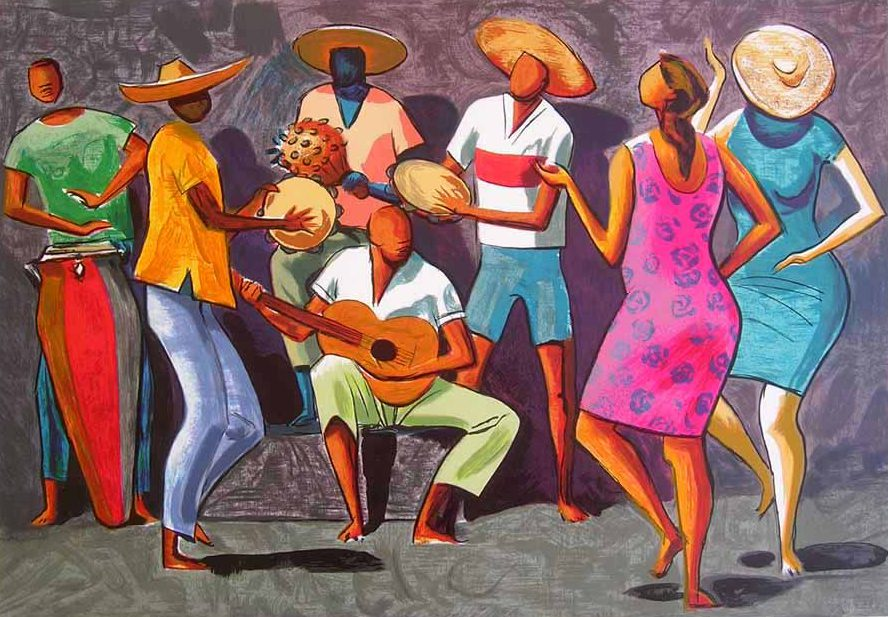

Samba é de longe a mais famosa só em falar no nome samba ja podemos associar a Brasil
Bom vamos para a sua história e origem, o ano de seu surgimento foi no século XX ela é africana, mas sua influência é tão grande no Brasil que passou a ser um símbolo da dança brasileira,foi trazida pelos negros escravizados é uma mistura de ritmos
O samba foi criado no Brasil e sua origem são os batuques trazidos pelos negros escravizados, misturados aos ritmos europeus, como a polca, a valsa, a mazurca, o minueto, entre outros. Inicialmente, as festas de danças dos negros escravos na Bahia eram chamadas de "samba". Os estudiosos apontam o Recôncavo Baiano como o berço do samba, especialmente o costume de dançar, cantar e tocar instrumentos em roda. "No Rio de Janeiro, os negros reuniram-se em bairros como Saúde, Estácio e Gamboa. Esses encontros davam-se nos terreiros — locais de práticas religiosas e encontros comunitários, além de lazer e diversão. Os terreiros eram propriedades das “tias baianas”, mulheres que difundiram práticas do candomblé no Rio de Janeiro e usavam suas propriedades para que os sambas pudessem acontecer. Isso porque, até a década de 1920, as festividades afro-brasileiras eram proibidas, pois eram consideradas “imorais” pelos costumes da época — um indício claro de racismo sobre a cultura afro-brasileira. Além disso, as celebrações realizadas por essas “tias” eram uma forma de integrar a comunidade e receber aqueles que haviam chegado ao Rio de Janeiro recentemente. Os sambas da época costumavam fazer pequenos jogos de palavras e contavam causos comuns da época assim como denunciavam as condições de vida dos negros no Rio de Janeiro. O historiador Marcos Alvito menciona o samba “Batuque na cozinha”, canção que aponta as “péssimas condições de habitação, concorrência desleal dos brancos em todas as esferas, preconceito e arbitrariedade por parte da polícia”. Esse tipo de samba então nascia no terreiros das tias baianas, das quais se destacaram Amélia e Ciata."
